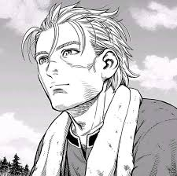

Un niño sanguinario que buscaba solo venganza por la muerte de su padre
a un personaje que solo quiere encontrar la paz en si mismo y redimirse
de los pecados que cometio en su pasado.
Sus temas y representaciones como
personaje van enlazados a su trasformacion y busqueda de un proposito mas allá
del odio y la venganza, a un viaje de redencion para combertirse en una mejor
persona y una lucha interna en buscar un nuevo camino.
Thorfin no es solo un
personaje para mostrar un reflejo de la violencía , la esclavitud y las guerras
del pasado, tambien es un icono de mejora y aprendisaje y no podemos seguir sin
mensionar a Askeladdel antagonista principal donde es el causante de la muerte de su padre
y el motor para el cambio y evolución de Thorfin.
Thorfin se le relaciona
con la filosofia del estoicismo donde el manejo de las emociones y la autodiciplina
se ven muy presentes, nuestro protagonista tiene estos principios estoicos donde su lucha
termina siendo interna y tambien encontra de la violencia de la cual le hara llegar a la FELICIDAD.
Link del anime
Link del manga
hola soy 2
hola soy 1
primer puesto
segundo puesto
tercer puesto
En un lugar de la Mancha, de cuyo nombre no quiero acordarme,
no ha mucho tiempo que vivía un hidalgo de los de lanza en
astillero, adarga antigua, rocín flaco y galgo corredor. Una
olla de algo más vaca que carnero, salpicón las más noches,
duelos y quebrantos los sábados, lentejas los viernes, algún
palomino de añadidura los domingos, consumían las tres
partes de su hacienda.
En un lugar de la Mancha,
de cuyo nombre no quiero acordarme,
no ha mucho tiempo que vivía un hidalgo
de los de lanza en astillero, adarga
antigua, rocín flaco y galgo corredor.
Una olla de algo más vaca que carnero,
Autor:
Gonzalo Delgado Macias
4to semestre de sof paralelo "A"
Tutora:ING. PATRICIA QUIROZ PALMA. MG